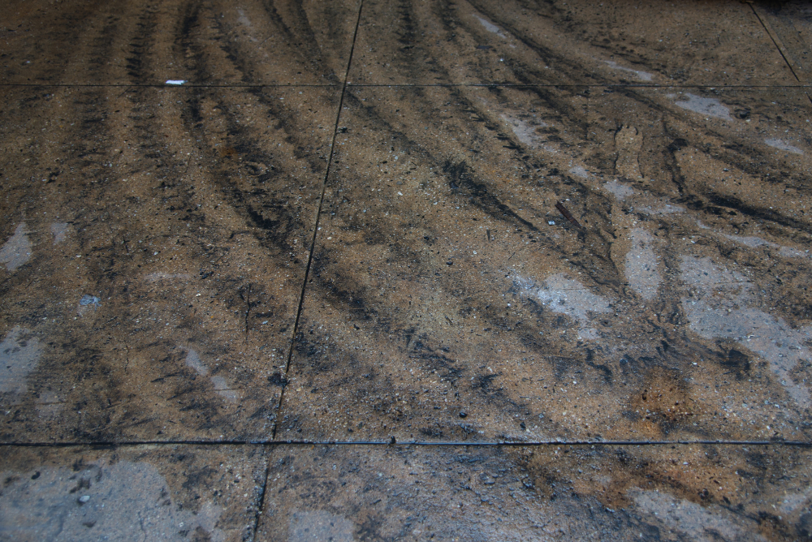
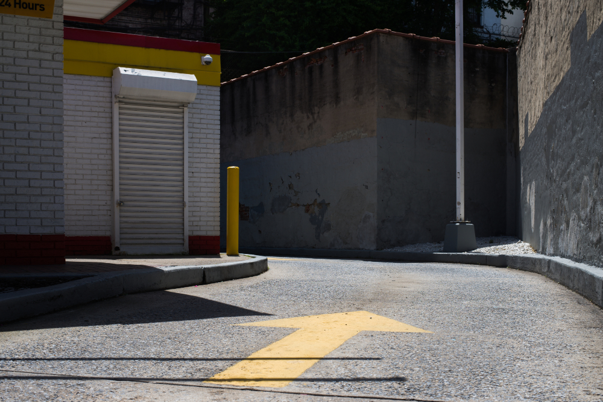
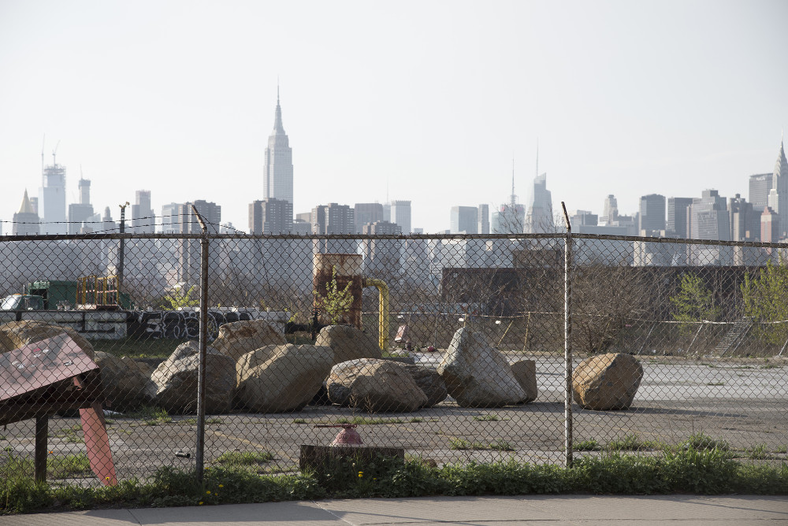
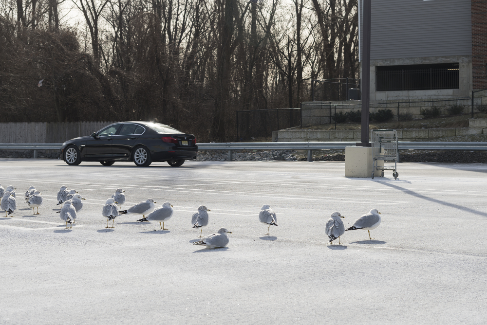

The Silent City
I have lived in cities for 30 years since I was born. But it is still hard for me to describe my feel on the city. City life should be loud. So many people, so many cars, so many bars and so many everything are in the city. I can see them, hear them every day, but I still feel far from them. However, the silent details or silent moments in my daily life always touch my heart. They can make even louder sound even though my ears get nothing. I collected some with my camera, and hope you can hear it, too.




